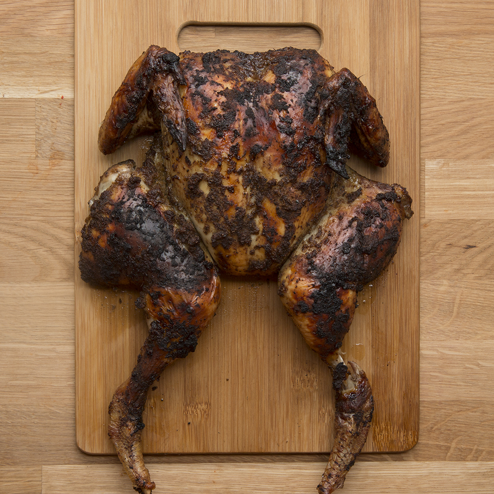

Roasted Jerk Chicken
Home

Description
Experience the authentic taste of the carribean with this crispy, oven-roasted dry-rubbed jerk chicken.
Ingredients
For the chicken
- 1 5lb whole chicken
- 1 whole onion, 11⁄2 head of garlic, peeled and 1 1⁄2 lemon
For the dry rub
- 3tbsp onion powder
- 3 tbsp dried thyme
- 3 tbsp ground allspice
- 3 tbsp cracked black pepper
- 2 tbsp brown sugar
- 2 tbsp garlic powder
- 1 1 1⁄2 tbsp sea salt
- 1 tbsp ground ginger
- 1 tbsp ground cinnamon
- 1 tbsp ground nutmeg
- 1 tbsp cayenne pepper
- 1 tbsp dried rosemary
- kosher salt
Directions
- Preheat the oven to 350°
- Prepare the chicken by patting it down with paper towel. Drying the chicken ensures that the skin will become nice and crispy
- Cut onion into quarters and skin the garlic. Stuff the onion, garlic and lemon into the chicken. Tie the legs of the chicken together with kitchen twine. This is called trussing and ensures that the chicken will stay together and roast evenly
- mix together dry ingredients in a bowl
- Coat and rub the chicken evenly with the spices, ensuring good coverage
- Don't skimp on the salt! Salt will help draw moisture out of the skin of the chicken, ensuring a nice crispy skin
- Place the chicken in a deep roasting dish and cook, uncovered for 25 minutes per lb
- Allow the chicken to rest for 15 minutes before carving
- Serve with banana ketchip